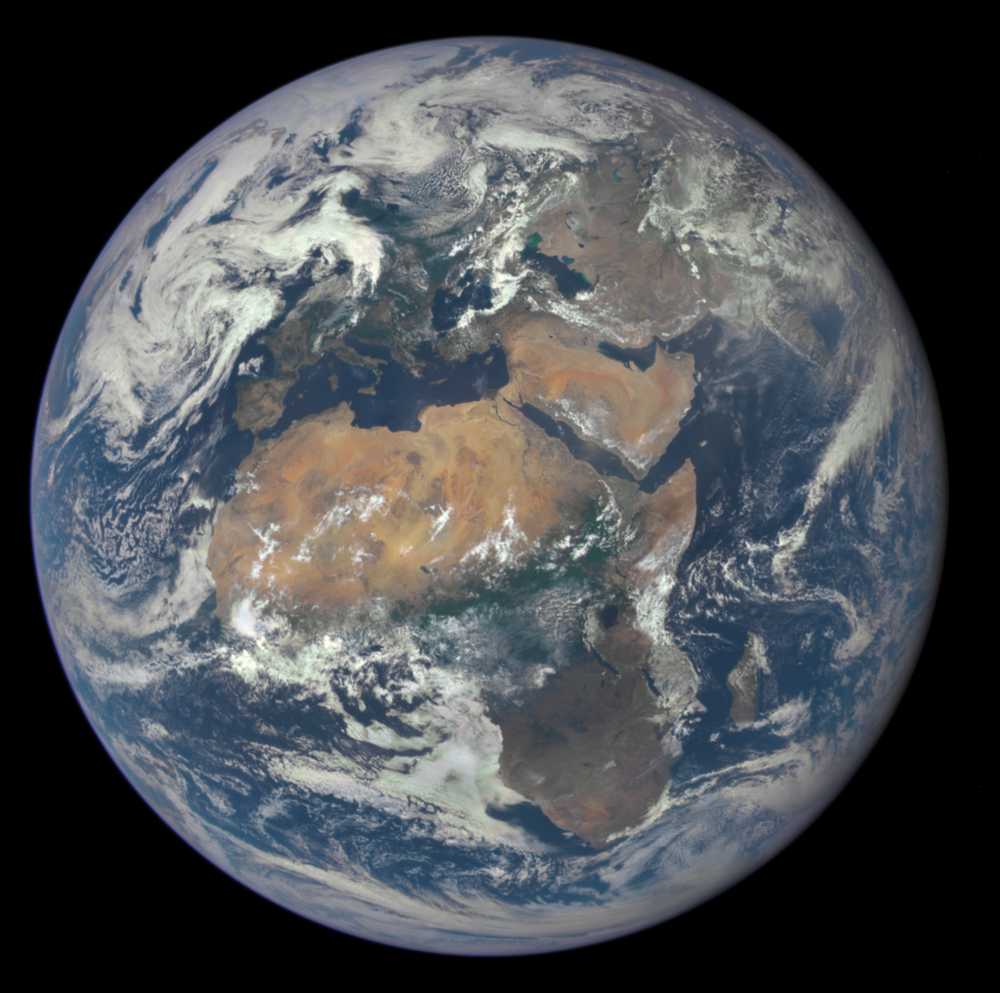

| Орбитальные характеристики |
| Перигелий |
147 098 290 км 0,98329134 а.е. |
| Афелий |
152 098 232 км 1,01671388 а.е. |
| Большая полуось (a) |
149 598 261 км 1,00000261 а.е. |
| Эксцентриситет орбиты (e) |
0,01671123 |
| Сидерический период обращения |
365,256363004 дней 365 сут 6 ч 9 мин 10 с |
| Орбитальная скорость (v) |
29,783 км/c 107 218 км/ч |
| Средняя аномалия (Mo) |
357,51716° |
| Наклонение (i) |
7,155° (отн. солнечного экватора),
1,57869° (отн. инвариантной плоскости) |
| Долгота восходящего узла (Ω) |
348,73936° |
| Аргумент перицентра (ω) |
114,20783° |
| Чей спутник |
Солнце |
| Спутники |
Луна и более 8300 искусственных спутников |
| Физические характеристики |
| Полярное сжатие |
0,0033528 |
| Экваториальный радиус |
6378,1 км |
| Полярный радиус |
6356,8 км |
| Средний радиус |
6371,0 км |
| Окружность большого круга |
40 075,017 км (по экватору) 40 007,863 км (по меридиану) |
| Площадь поверхности (S) |
510 072 000 км²[7][8]
148 940 000 км² суша (29,2 %)
361 132 000 км² вода (70,8 %) |
| Объём (V) |
1,08321⋅1012 км³ |
| Масса (m) |
5,9726⋅1024 кг (3⋅10-6 M☉) |
| Средняя плотность (ρ) |
5,5153 г/см³ |
| Ускорение свободного падения на экваторе (g) |
9,780327 м/с² (0,99732 g) |
| Первая космическая скорость (v1) |
7,91 км/с |
| Вторая космическая скорость (v2) |
11,186 км/с |
| Экваториальная скорость вращения |
1674,4 км/ч (465,1 м/с) |
| Период вращения (T) |
0,99726968 суток (23h 56m 4,100s) — сидерический период вращения[10], 24 часа — длительность средних солнечных суток |
| Наклон оси |
23°26ʹ21ʺ,4119 |
| Альбедо |
0,306 (Бонд) 0,434 (геометрическое) |
| Температура |
| мин. сред. макс. |
| 184 K (−89.2 °C) 287.2 К (14 °C) 329.9 К (56.7 °C) |
| Атмосфера |
Состав:
- 78,08 % — азот (N2)
- 20,95 % — кислород (O2)
- 0,93 % — аргон (Ar)
- 0,04 % — углекислый газ (СO2)
- Около 1 % водяного пара (в зависимости от климата)
|
|

Фотография Земли, сделанная 29 июля 2015 года с борта космического аппарата Deep Space Climate Observatory
|